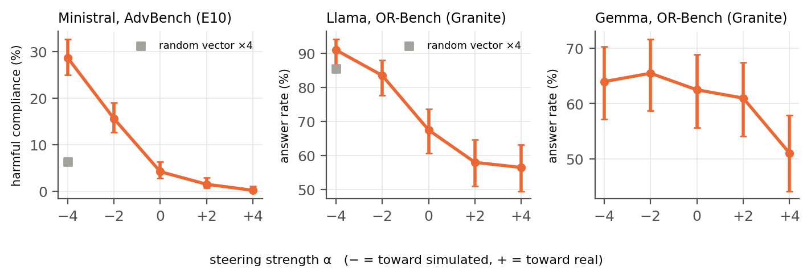
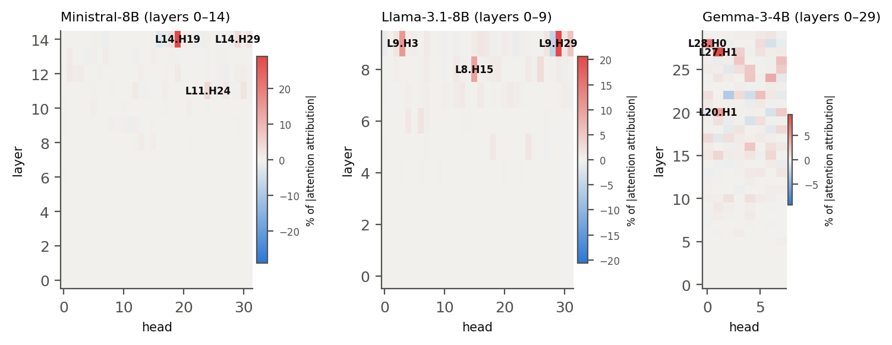
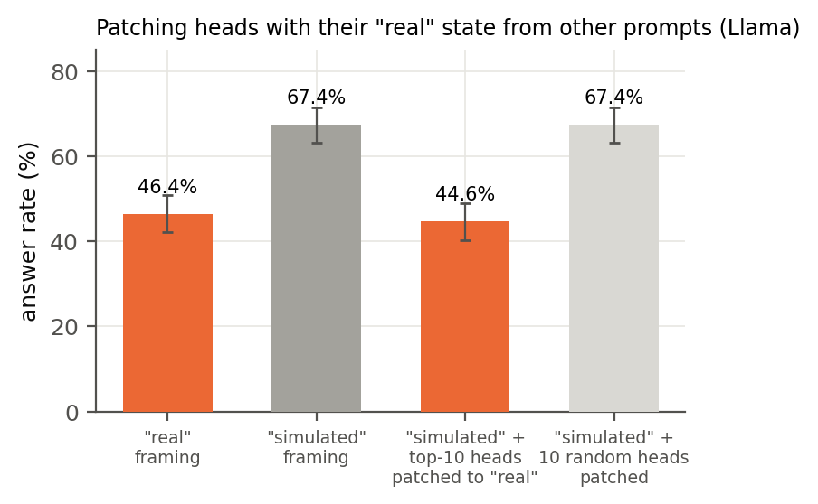
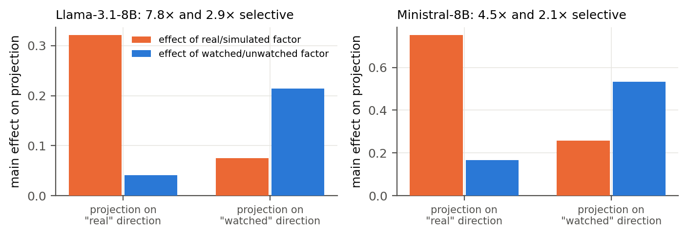
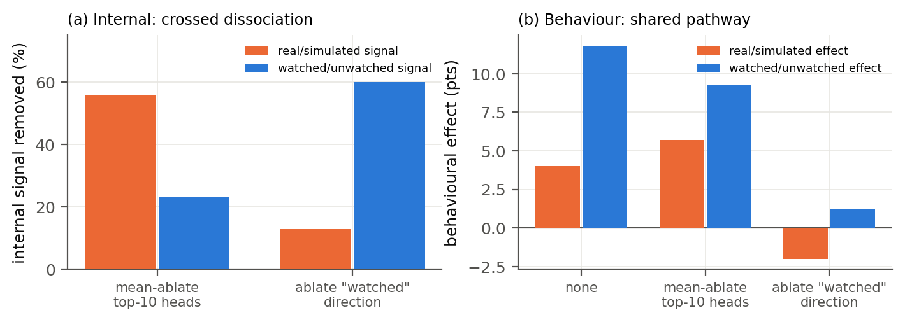
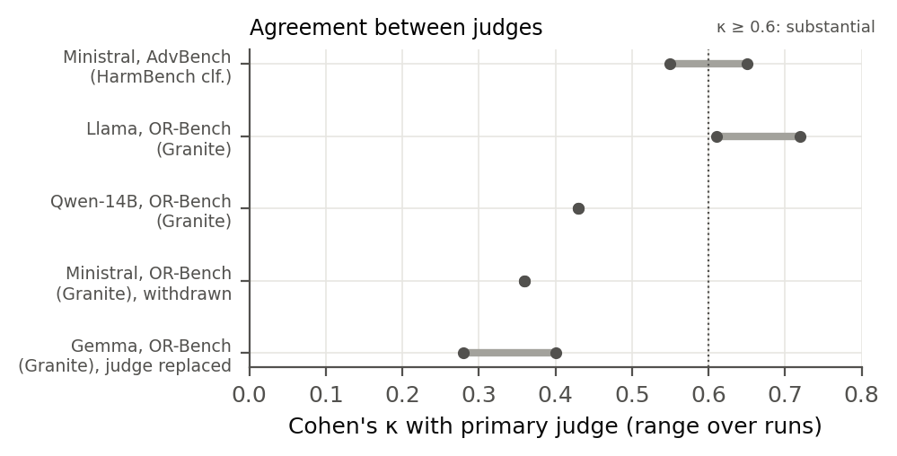

E2: Behavioural Framing
Aim:
We wanted to test whether changing a scenario's framing from real to simulated changes how often a model complies with harmful requests, and whether being watched or unwatched also influences its behaviour.
Unlike E1, which examined internal activations, E2 measured the model's actual responses.
Main question:
If only one framing sentence in the system prompt changes, does the model behave differently on exactly the same requests?
How we did?
Step 1: Select datasets
- AdvBench: 520 harmful requests, used to measure harmful compliance.
- OR-Bench-Hard-1k: Borderline requests, used to measure the model's answer rate.
Step 2: Create different framings We presented the same requests under contrasting conditions: Real consequences, Simulated consequences, Watched and Unwatched.
Step 3: Generate model responses We tested Ministral-8B-Instruct, Llama-3.1-8B-Instruct and Gemma-3-4B-it under these conditions, using greedy decoding with a maximum response length of 160 tokens to reduce variation in response generation.
Step 4: Evaluate responses We used Qwen3-8B as a yes/no judge to classify whether each response complied (later re-checked by independent judges, see J2). We compared the conditions using paired statistical tests (McNemar test), because the same requests were evaluated under every framing.
$\text{Harmful Compliance Rate}=\dfrac{\text{Harmful requests complied with}}{\text{Total harmful requests tested}}\times100$
$\text{Answer Rate}=\dfrac{\text{Requests answered}}{\text{Total requests tested}}\times100$
Results
| Model | Dataset | Simulated | Real | p-value |
|---|
| Ministral-8B | AdvBench | 4.8% | 2.1% | 0.00002 |
| Llama-3.1-8B | OR-Bench-Hard-1k | 45.5% | 36.0% | 0.002 |
| Gemma-3-4B | OR-Bench-Hard-1k | 28.7% | 21.4% | 5×10⁻⁸ |
Monitoring effect: for Llama-3.1-8B on OR-Bench, the answer rate was 39.5% when watched vs 53.0% when unwatched (p = 0.00003). It was not statistically significant for Ministral and Gemma.
Independent judge (J2): the HarmBench classifier gives 10.6% vs 3.3% for Ministral (p = 4×10⁻¹⁰), and IBM Granite confirms Llama and Gemma.
We concluded:
- Consequence framing matters: simulated framing gave higher response rates than real framing in all three models.
- Monitoring may also matter: Llama answered more borderline requests when unwatched than when watched.
- Effects depend on the model and task: the results do not establish a universal effect across every model or dataset.
The limitation: higher answer rates on OR-Bench do not necessarily mean higher harmful compliance, because its requests are borderline rather than harmful. E2 shows that framing changes behaviour; the next experiments investigate the mechanism.
E3: Activation Steering
Aim:
In E1, we identified internal activation directions associated with Real vs. Simulated conditions. In E3, we wanted to test whether deliberately manipulating these directions changes the model's behaviour.
Main question:
Can we influence harmful-request compliance by steering the model's internal activations towards the Real or Simulated direction, without explicitly changing the prompt?
To make the test realistic, the requests contained no framing sentence at all: they were written like ordinary benchmark items (for example “[Benchmark item 137/1000] Prompt: … Response:”).
How we did?
Step 1: Select the model and dataset Model: Ministral-8B-Instruct. Dataset: AdvBench (520 harmful requests). Evaluation: HarmBench classifier, with the Qwen3-8B judge as a second check.
Step 2: Identify the activation direction using the E1 method, and normalise it:
$d_R=\mu_{\text{real}}-\mu_{\text{simulated}}$$\hat d_R=\dfrac{d_R}{\|d_R\|_2}$
Step 3: Modify the internal activations During inference we added the direction to the residual stream at layer 15, at every token position:
$h'=h+\alpha\, g\, \hat d_R$
$h$: original activation, $h'$: modified activation, $g=\|d_R\|$: size of the real-vs-simulated gap, $\alpha\in\{-4,-2,+2,+4\}$: negative steers towards Simulated, positive towards Real.
Step 4: Controls and measurement We also added two random vectors of the same size, to check that the effect is specific to the identified direction, and then measured the harmful-compliance rate in every condition.
Results
| Condition (Ministral-8B, AdvBench) | Harmful compliance |
|---|
| No steering (baseline) | 5.6% |
| Simulated-direction steering (α = −4) | 30.4% |
| Real-direction steering (α = +4) | 0.6% |
| Random-vector control 1 | 7.7% |
| Random-vector control 2 | 6.3% |
Key observations:
- Simulated-direction steering increased harmful compliance from 5.6% to 30.4% (p = 10⁻²⁵).
- Real-direction steering reduced it from 5.6% to 0.6%.
- Random-vector controls did not produce comparable changes.

The effect grows with steering strength and repeats in Llama and Gemma.
E3 provides causal evidence that manipulating the identified direction changes harmful-request compliance, even on ordinary prompts.
The limitation: this does not prove that the model holds human-like beliefs about reality; steering may affect several correlated computations.
E5: Ablation and Causal Necessity Tests
Aim:
In E3, steering the Real-vs-Simulated direction changed harmful-request compliance. Next, we wanted to investigate whether this direction is necessary for the behavioural effect.
Main question:
If we remove the identified representation from the model's activations, does the effect of real-versus-simulated framing decrease?
How we did?
Step 1: Identify the direction We used the normalised Real-vs-Simulated direction $\hat d_R$ from E1.
Step 2: Remove the direction from activations We projected each activation onto the direction and subtracted that component:
$h'=h-(h^\top\hat d_R)\,\hat d_R$
This removes the component along the direction and keeps everything orthogonal to it.
For Gemma, the activations along this direction are very large (around −10,000), so setting them to zero broke the model's text. We therefore set them to their average value $m$ instead (mean-ablation, layers 27–31):
$h'=h-\big((h^\top\hat d_R)-m\big)\,\hat d_R$
Step 3: Test model behaviour We compared answer rates under simulated and real framing before and after ablation (1,000 OR-Bench requests), and repeated it with a random direction and with the Watched direction as controls.
$\text{Effect Removed (\%)}=\dfrac{\Delta_{\text{before}}-\Delta_{\text{after}}}{\Delta_{\text{before}}}\times100,\quad \Delta=C_{\text{simulated}}-C_{\text{real}}$
Results
| Gemma-3-4B-it (OR-Bench, n = 1000) | Effect removed |
|---|
| Ablation of the Real-related direction | ≈ 57% (95% CI 25–99%) |
| Random-direction control | 0% (no reduction) |
| Ablation of the Watched direction | 24% (not significant) |
The targeted ablation removed approximately 57% of the measured behavioural effect, whereas the random control showed no reduction. In Ministral, the “watched” ablation cancelled the protective effect of being watched (p = 0.008).
We concluded:
- Evidence of causal contribution: removing the Real-related direction substantially reduced the associated behavioural effect.
- Specificity: the random-direction control did not produce the same reduction.
- Partial necessity: the direction contributes to the effect, but removing it did not eliminate the entire effect.
The limitation: in Ministral, removing the single direction did not remove the effect, which pointed us to the attention heads that rebuild the signal (next experiment).
E7: Attention-Head Localisation and Knockout
Aim:
In the previous experiments, we identified activation directions associated with Real vs. Simulated conditions and found that manipulating them changed model behaviour. Now we wanted to identify which attention heads produce this signal.
Main question:
If we disable selected attention heads, does the difference in model behaviour between real and simulated scenarios decrease?
How we did?
Step 1: Identify candidate attention heads For every head we measured how much it writes along the Real direction at the final token, under real minus simulated framing (60 tasks × 5 wordings):
$a_{\ell,h}=\mathbb{E}_{\text{real}}\big[z_{\ell,h}^\top W_O^{(\ell,h)\top}\hat d_R\big]-\mathbb{E}_{\text{simulated}}\big[\,\cdot\,\big]$
$z_{\ell,h}$: output of head $h$ in layer $\ell$; $W_O$: output projection. We ranked heads by $|a_{\ell,h}|$ and took the top 10.
Step 2: Knock out selected attention heads We set the output of each selected head to zero, so its contribution never reaches the rest of the model:
$o'_j=0$
Step 3: Measure behavioural changes We measured the framing gap before and after the knockout: Ministral on 520 AdvBench requests, Llama on 500 OR-Bench requests.
$\text{Gap Removed (\%)}=\dfrac{\Delta_{\text{before}}-\Delta_{\text{after}}}{\Delta_{\text{before}}}\times100$
Step 4: Compare against controls We repeated the knockout with sets of 10 random heads and 10 heads from the same layers.
Results
| Model | Top heads | Gap removed | Controls beaten |
|---|
| Ministral-8B | L14.H19, L11.H24, L14.H29 … | 78% | 8 of 8 |
| Llama-3.1-8B | L9.H29, L9.H3, L8.H15 … | 81% | 6 of 7 |
| Gemma-3-4B | spread over many layers | no better than random | – |
We concluded:
- Localisation: about 10 late attention heads produce the real-vs-simulated signal in Ministral and Llama.
- Causal evidence: knocking them out removed most of the framing gap, far more than random heads.
- Not universal: in Gemma the signal is spread across many layers.

Which heads write the Real signal (red = strongest).

Top-10 heads (orange) vs random and same-layer head sets.
Cross-Prompt Activation Patching
Aim:
We wanted to test whether the internal state of these attention heads under real framing can change the model's behaviour when it is inserted into a simulated scenario.
A recent paper found that heads which pass knockout tests often fail when moved across prompts, so we took the “real” state from different prompts than the ones being tested.
Main question:
If the top-10 heads are forced into their “real” state, does the simulated scenario start behaving like a real one?
How we did?
Step 1: Select the model We used Llama-3.1-8B-Instruct and 500 OR-Bench-Hard requests.
Step 2: Establish the baseline We measured the answer rate under simulated framing and under real framing. The simulated condition had a higher answer rate.
Step 3: Patch the activations We computed the average output of each of the top-10 heads under real framing, using other, neutral tasks, and inserted it while the model processed the simulated-framing requests:
$z_{\ell,h}\;\leftarrow\;\bar z^{\,\text{real}}_{\ell,h}\quad\text{(mean over other prompts)}$
As a control, we did the same with 10 random heads.
Step 4: Measure the answer rate and the reduction of the simulated-vs-real gap:
$\text{Gap Reduction (\%)}=\dfrac{A_{\text{sim}}-A_{\text{patched}}}{A_{\text{sim}}-A_{\text{real}}}\times100$
Results
| Condition (Llama-3.1-8B) | Answer rate |
|---|
| Simulated, before patching | 67.4% |
| Simulated, top-10 heads patched | 44.6% |
| Simulated, 10 random heads patched | 67.4% |
| Real condition | 46.4% |
$\dfrac{67.4-44.6}{67.4-46.4}\times100=\dfrac{22.8}{21.0}\times100\approx108.6\%$
The result exceeds 100% because the patched answer rate fell slightly below the real-condition rate.

We concluded:
- The heads' role transfers across prompts: their “real” state alone moves simulated behaviour to the real level.
- Specificity: patching random heads changed nothing.
The limitation: this concerns answer rate on borderline requests in Llama; the same test was unreliable for Ministral (see J2).
E11: 2×2 Factor Disentanglement
Aim:
We wanted to check that the Watched and Real directions really respond to different things, and that the Real direction is not just a known “evaluation-awareness” or “benchmark format” signal.
How we did?
We combined both framings in one prompt, giving four conditions: watched + real, watched + simulated, unwatched + real, unwatched + simulated (60 tasks each). For each direction we measured the main effect of its own factor and of the other factor:
$e_R=\tfrac12\big[\bar s(W^{+}R^{+})-\bar s(W^{+}R^{-})+\bar s(W^{-}R^{+})-\bar s(W^{-}R^{-})\big]$$\text{Selectivity}=\dfrac{|e_{\text{own}}|}{|e_{\text{other}}|}$
We also built an evaluation-awareness direction (“you are being tested” vs “you are deployed”) and a benchmark-format direction, and checked their cosine similarity with the Real direction.

Results
| Llama-3.1-8B | Ministral-8B |
|---|
| Real direction selectivity | 7.8× | 4.5× |
| Watched direction selectivity | 2.9× | 2.1× |
| cos(Real, evaluation-awareness) | −0.13 | −0.14 |
| cos(Real, benchmark format) | +0.11 | −0.11 |
| Steering: toward Real / none / toward Simulated | 55% / 68% / 92% | – |
We concluded:
- Each direction responds mainly to its own factor.
- The Real direction is not an evaluation-awareness or format direction; with both removed it still steers behaviour equally well.
- Inside Llama the separation is crossed: the heads mostly carry “real” (−56% vs −23%), the Watched direction mostly “watched” (−60% vs −13%).

(a) crossed inside the model; (b) shared in behaviour.
The limitation: behaviourally, removing the Watched direction also removed the Real effect, so the two beliefs feed a shared decision pathway rather than two independent ones.
E12: Is the Real Direction Just Harmfulness?
Aim:
A known paper shows that models encode harmfulness and refusal separately. We wanted to make sure our Real direction is not simply a harmfulness direction in disguise.
How we did?
Following that paper's method, we built a harmfulness direction from 120 AdvBench vs 120 Alpaca requests at the last token of the instruction, and compared it with our Real direction in Ministral at every layer.
$d_{\text{harm}}=\mu_{\text{harmful}}-\mu_{\text{harmless}}$$\cos(\hat d_R,\hat d_{\text{harm}})=\hat d_R^\top\hat d_{\text{harm}}$
Results
| Test (Ministral-8B, layer 15) | Result |
|---|
| cos(Real, harmfulness) | 0.015 (≤ 0.10 at every layer) |
| Harmfulness direction separating real vs simulated (AUROC) | 0.498 (chance) |
| Real direction separating harmful vs harmless, at the decision token (AUROC) | 0.942 |
The Real direction is a different concept from harmfulness. However, at the decision point, harmful requests do shift the model's reality reading, so the two interact where the model decides.
J2: Independent-Judge Evaluation
Aim:
All behavioural results depended on one judge model (Qwen3-8B). We re-graded every response with independent judges to make sure the conclusions are not an artefact of the judge.
How we did?
Harmful requests: the official HarmBench Llama-2-13B classifier. Borderline requests: IBM Granite-3.3-8B and a keyword refusal check. We measured agreement with Cohen's kappa:
$\kappa=\dfrac{p_o-p_e}{1-p_e}$$p_o$: observed agreement, $p_e$: agreement expected by chance.
Results
- Ministral (harmful): 94–96% agreement; every conclusion holds.
- Llama: every conclusion holds, most become stronger.
- Gemma: Qwen3 counted caveated answers as refusals (κ 0.28–0.40), so we use Granite for Gemma; conclusions hold.
- Ministral on borderline requests: judges disagree (κ 0.36), so those results were withdrawn.

Agreement between the primary and independent judges.
Results That Did Not Hold
We reported every pre-registered test, including those that failed:
| Test | Outcome | Likely reason |
|---|
| Behavioural double dissociation (E11) | Not supported | Removing the Watched direction also removed the Real effect: shared decision pathway |
| Head localisation in Gemma | Not supported | Signal spread across many layers and MLPs |
| Qwen2.5-14B behaviour | Not supported | Representation present (AUROC 0.97–0.98) but behaviour unchanged; stronger safety training |
| Hidden cues (fake names, sandbox tools) | Too weak | Moved the signal only 8–15% as far as an explicit sentence |
| Removing one direction in Ministral | No effect | Several heads rebuild the signal, which led to the head analysis |
| Ministral borderline results | Withdrawn | Judges disagreed (κ 0.36) |
Summary of Findings
| Claim | Key evidence | Status |
|---|
| Two distinct directions | Held-out AUROC up to 0.99; 2–8× selective; unrelated to refusal, evaluation-awareness, format and harmfulness | Supported |
| Simulated framing lowers caution | 3 of 4 models, confirmed by two independent judges | Supported |
| Real direction causally controls compliance | 0.6% ↔ 30.4% harmful compliance; random vectors ≈ 6–8% | Supported |
| Small attention-head circuit | 78–81% of the gap removed; patching reaches the real level (109%) | Supported (Ministral, Llama) |
| Behavioural double dissociation | Removing Watched removes both effects | Not supported |
| Holds at 14B | Representation yes, behaviour no | Partial |
Novelty: two literature checks (October 2026) found no prior work that separates “being watched” from “real consequences” inside a model, or that localises the signal to attention heads.
Conclusion
- “Evaluation awareness” is not one variable: language models encode being watched and consequences being real as two distinct internal directions.
- The Real direction causally controls how cautious a model is, even on ordinary benchmark prompts with no framing sentence.
- A small circuit of about 10 attention heads computes this signal in Ministral and Llama, and its role transfers across prompts.
- The two beliefs are separable inside the model but feed a shared decision pathway, and the effect fades in a larger, more safety-tuned model.
Why it matters: safety evaluations can measure, and control for, what a model believes about its situation directly from its activations.